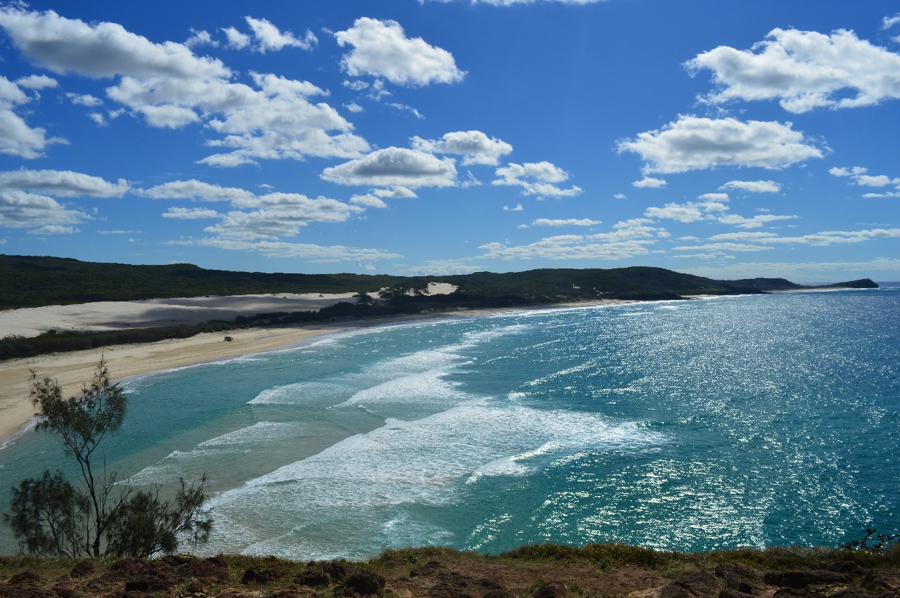

Ryder | 15min read | 30-10-2023

Fraser Island: A pristine, natural wonderland off the coast of Queensland, known for its sandy beaches, crystal-clear lakes, and unique ecosystem."
Cultural Diversity
Fraser Island, located just off the coast of Queensland, Australia, is a natural masterpiece and a World Heritage-listed wonder. As the world's largest sand island, Fraser Island is a pristine paradise of unparalleled beauty. Its breathtaking landscapes include endless stretches of sandy beaches, lush rainforests, and strikingly clear freshwater lakes, such as Lake McKenzie and Lake Wabby. The island's unique ecosystem hosts diverse wildlife, including dingoes, wallabies, and a rich array of bird species. Visitors can explore its wonders through four-wheel drive adventures, hiking, or simply relaxing on the pristine shores. Fraser Island stands as a testament to the raw beauty of nature, offering a remarkable escape from the bustle of everyday life.
Pristine Natural Beauty
Fraser Island, known as "K'gari" in the indigenous Butchulla language, is celebrated for its unspoiled natural beauty. It's a place where you can immerse yourself in the enchanting landscapes shaped by time and the elements. The island is blanketed in stunning sandy beaches that stretch for over 100 kilometers, offering a unique blend of coastal charm and rugged wilderness.
Diverse Ecosystems
Fraser Island is a living showcase of biodiversity. Its unique ecosystems encompass lush rainforests, towering sand dunes, and crystal-clear freshwater lakes. The island's remarkable diversity sustains a wide range of wildlife, including the elusive Fraser Island dingoes, wallabies, and numerous bird species. Its vibrant marine life is a playground for snorkelers and divers.
Natural Wonders
This sand island is home to awe-inspiring natural wonders. Iconic destinations like Lake McKenzie, a pristine freshwater lake, and the Maheno Shipwreck, a relic of maritime history, captivate visitors. The perched dune of Lake Wabby and the mesmerizing Champagne Pools add to the island's allure.Visitors can explore Fraser Island's wonders through guided tours, four-wheel drive adventures, or self-guided hiking expeditions. It's a haven for outdoor enthusiasts, with opportunities for bushwalking, camping, and wildlife watching. Fraser Island is not just a destination; it's a sanctuary of natural beauty, a living testament to the power of the environment, and a place where adventure and exploration meet preservation and reverence for the natural world.